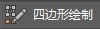
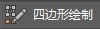

使用四边形绘制工具(Quad Draw Tool)手动绘制点，即可创建多边形。使用这些选项可设置在使用四边形绘制工具时发生的情况。选择“网格工具 > 四边形绘制”(Mesh Tools > Quad Draw) >  ，单击“建模工具包”(Modeling Toolkit)中的 ，或从任何组件标记菜单中选择该工具时，“建模工具包”(Modeling Toolkit)中将显示以下选项。有关如何使用该工具的详细信息，请参见使用四边形绘制创建多边形。
，单击“建模工具包”(Modeling Toolkit)中的 ，或从任何组件标记菜单中选择该工具时，“建模工具包”(Modeling Toolkit)中将显示以下选项。有关如何使用该工具的详细信息，请参见使用四边形绘制创建多边形。
四边形绘制选项
- 自动焊接(Auto-weld)
-
启用后（默认），“四边形绘制”(Quad Draw)工具会自动焊接相邻的顶点和边。“自动焊接”(Auto-weld)可以与“延伸”(Extend)工具和“四边形绘制”(Quad Draw)调整模式一起使用，以避免组件在新拓扑上重叠。
调整滑块设置焊接操作的容差。例如，如果“自动焊接”(Auto-weld)容差设置为 10，则距离相差 10 像素或更小的组件会合并在一起。您还可以在“四边形绘制工具”(Quad Draw Tool)标记菜单中切换“自动焊接”(Auto-weld)。
重要： 启用“软选择”(Soft Select)时，“自动焊接”(Auto-weld)将无效。 - 松弛(Relax)
-
可用来平均分配曲面上顶点的间距，并清除通过“四边形绘制”(Quad Draw)工具创建的新拓扑。可以平滑整个曲面或将松弛操作聚焦于网格的一部分。请参见使用四边形绘制松弛顶点。
以下选项用于锁定顶点，因此您可以将松弛操作限制为边界顶点或内部顶点。
提示： 也可以从“四边形绘制工具”(Quad Draw Tool)标记菜单中选择以下选项。
- 自动锁定(Auto-Lock)
- （默认）使用光标的位置以确定要锁定的顶点（内部顶点或边界顶点）。开始松弛边界顶点时，松弛笔刷将自动锁定内部顶点。开始松弛内部顶点时，松弛笔刷将自动锁定边界顶点。
- 内部顶点(Interior vertices)
- 锁定边界顶点，确保它们在您松弛内部顶点时保持在相同位置。
- 边界顶点(Border vertices)
- 锁定内部顶点，确保它们在您松弛边界顶点时保持在相同位置。
只能同时松弛作为连续边界边一部分的顶点。
注： 启用“边界顶点”(Border vertices)或“所有顶点”(All vertices)时，可以松弛边界。“边界顶点”(Border vertices)产生的结果略有不同，因为它仅平均边界顶点的权重。 - 所有顶点(All vertices)
- 松弛笔刷会影响所有顶点。
- 延伸(Extend)
-
允许延伸网格的边，从而创建新的多边形。请参见使用四边形绘制延伸边。
- 边(Edge)
- （默认）延伸网格的一条边。
提示： 当选择了“边”(Edge)之后，还可以通过拖动顶点来创建新多边形。
- 循环(Loop)
- 延伸网格的循环边。
- 边界(Border)
- 延伸网格的边界。
- 四边形带宽度(Quad Strip Width)
-
设置四边形带的宽度。请参见使用四边形绘制创建四边形带。
激活约束选项(Live Constraint Options)
- 线框叠加(Wireframe Overlay)
- 以指定颜色加粗显示活动曲面的线框。
- 网格颜色(Mesh Color)
- 以指定颜色对活动曲面的面进行着色。
- 网格 Alpha (Mesh Alpha)
- 控制活动曲面的透明度。
- 曲面偏移(Surface Offset)
- 指定激活对象的曲面点的绘制深度。
- 捕捉到背面(Snap to Backfaces)
- 在捕捉和绘制点时忽略激活曲面的法线。如果激活网格具有不一致或反转的法线（导致出现意外的捕捉/绘制行为），此选项十分有用。
注： 尽管此选项会获得更佳效果，但最好还是尽量修复激活网格法线。